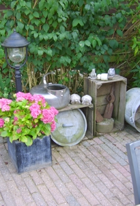

Van kleins af aan ben ik al met allerlei dieren opgegroeid. Het was voor mij dan ook zeer snel duidelijk dat ik graag dierenarts/veearts wilde worden.
Nadat ik mijn Atheneumdiploma op het Stella Maris College in Meerssen gehaald had, ben ik aan de studie Diergeneeskunde begonnen in Antwerpen. Na daar de eerste 3 jaar gehaald te hebben, ben ik verder gaan studeren in Merelbeke/Gent, waar ik in 2004 afgestudeerd ben. Daarna ben ik direct gaan werken in een groepspraktijk in Noord-Limburg. Daar heb ik ongeveer 6 jaar met veel plezier gewerkt.
In mijn vrije tijd maak ik graag uitstapjes met mijn vrouw Anniek en kinderen Riff en Mira. Verder tuinier ik graag en ben ik al jaren een fanatieke koi- en dartliefhebber. Sinds een aantal jaren hebben we ook zwartbles schapen. De verzorging hiervan wordt met veel plezier door ons hele gezin gedaan. Ook fokken wij met de schapen. Dit jaar zult u dus ook onze lammetjes vanaf de Kleine Heideweg kunnen bewonderen.
Zij is een echte katten- en hondenvriend en heeft groene vingers. Verder heeft ze een aantal aquaria met diverse soorten vissen, waaronder ook recent koi’s. Zij is er meestal op de maandag en woensdag.
Net zoals Hesther is zij ook een katten- en hondenvriend. Thuis heeft ze een hond en drie katten. In haar vrije tijd bezoekt ze graag comic con-events en houdt van het bourgondische leven. Zij is er meestal op de dinsdag, donderdag en vrijdag.
Voor gezelschapsdieren zit ik samen in een dienstverband met Diergezondheidscentrum Nicolaï in Nuth, Dierenarts Hulsberg, Dierenartspraktijk Voerendaal en Dierenkliniek Gulpen-Margraten. Als doorverwijskliniek/2e lijnskliniek werk ik samen met Sanimalia in Diepenbeek.
